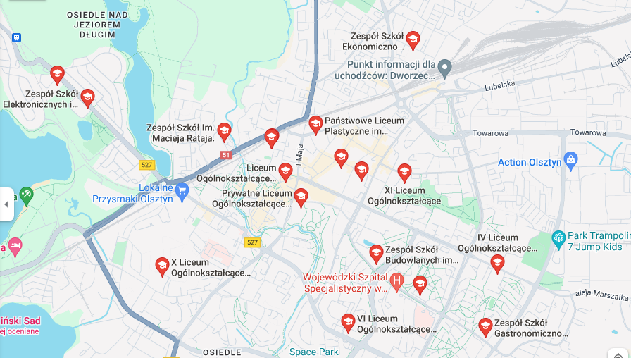

Nazywam się Krzysztof Biczak i chodzę do klasy 1TP w Zespole Szkół Elektronicznych i Telekomunikacyjnych w Olsztynie.
Chodzę na przedmioty witryny i aplikacje internetowe, bazy danych i pracownie witryn i aplikacji internetowych.
Mój ulubiony przedmiot to pracownie witryn i aplikacji internetowych.
| Moje zainteresowania | Wyniki moich zainteresowań |
|---|
| Gry komputerowe | Słabo gram w gry komputerowe |
| Nauka | Dobrze się uczę i nieżle mi idzie |
| Rowerzystwo | Nie umiem jeżdzic na rowerze |
Zeszpól Szkół Elektronicznych i Telekomunikacyjnych w Olsztynie jest bardzo przestiżową szkołą.
Posiada profesjonalną kastę nauczycieli w tym niezwykle prestiżowego Mirosława Bukowskiego
